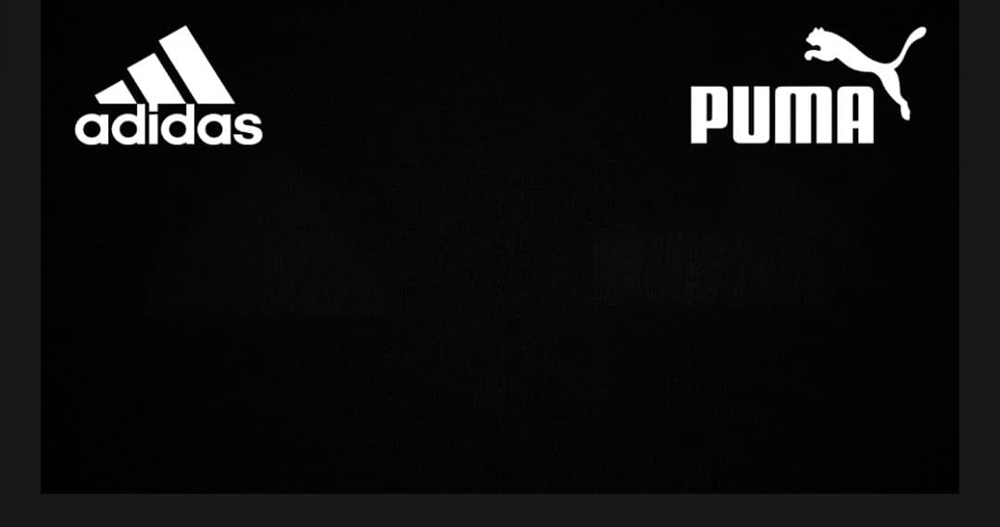
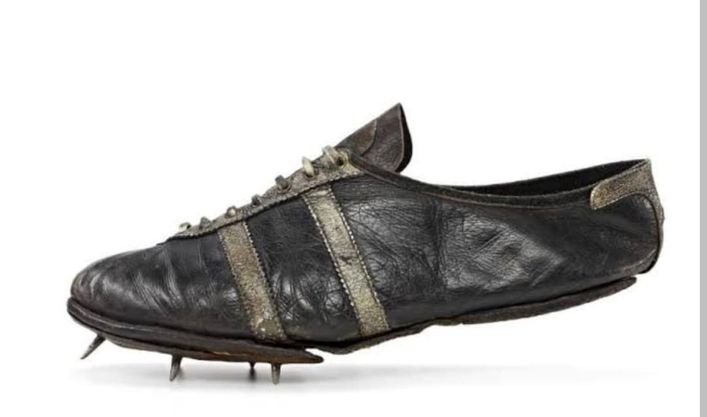
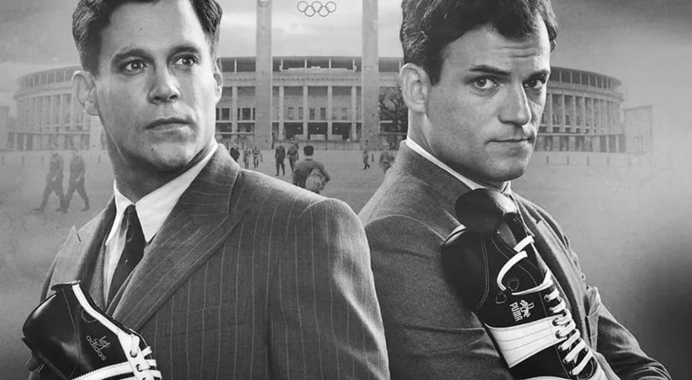

Jesse Owens, armement nazi et dénazification : la véritable histoire des frères Dassler pendant la Seconde Guerre mondiale

Avant de devenir les deux géants mondiaux de l'équipement sportif, **Adidas** et **Puma** ne formaient qu'une seule et même entreprise : la Gebrüder Dassler Schuhfabrik (Fabrique de chaussures des frères Dassler), fondée dans la ville bavaroise d'Herzogenaurach dans les années 1920 par deux frères, **Adolf ("Adi")** et **Rudolf ("Rudi") Dassler**.
La Seconde Guerre mondiale, la réquisition des usines pour l'effort de guerre nazi et les procédures de dénazification menées par l'armée américaine ont brisé la famille Dassler, donnant naissance à l'une des plus féroces rivalités industrielles et familiales du XXe siècle.
En mai 1933, peu après l'arrivée au pouvoir d'Adolf Hitler, les deux frères adhèrent au parti nazi (NSDAP), un passage alors quasi incontournable pour sécuriser leur activité industrielle. Alors qu'Adi est un artisan fasciné par la technique et le perfectionnement des chaussures d'athlétisme, Rudi est le commercial méthodique et influent du duo.
Aux **Jeux Olympiques de Berlin en 1936**, la marque réalise un coup d'éclat international : Adi Dassler convainc le sprinter afro-américain **Jesse Owens** de porter ses chaussures à pointes en cuir. Owens remporte quatre médailles d'or sous les yeux du régime nazi, propulsant la renommée mondiale de l'entreprise familiale.

Avec le déclenchement de la guerre, la production de chaussures de sport est progressivement interrompue. L'entreprise est réquisitionnée par les autorités allemandes pour fournir des bottes militaires à la Wehrmacht et de l'équipement sportif à la Hitlerjugend.
En 1943, alors que le conflit tourne au désastre pour l'Allemagne, la production civile s'arrête totalement. L'usine d'Herzogenaurach est transformée en atelier d'armement : ses machines sont saisies pour fabriquer des pièces destinées au **Panzerschreck** (le lance-roquettes antichar allemand) et au matériel d'artillerie, exploitant notamment de la main-d'œuvre forcée sous contrôle militaire.
Une légende urbaine tenace affirme que les frères se seraient fâchés parce que l'un soutiendrait le nazisme et l'autre non. C'est historiquement faux : Adi et Rudi ont tous deux été membres du parti nazi. Leur rupture découle d'une accumulation de rancœurs familiales, de jalousies et d'une paranoïa exacerbée par le conflit.
Plusieurs événements ont scellé leur haine mutuelle :

En 1945, la fabrique est sauvée de la destruction par les forces d'occupation américaines. Les soldats GI's, installés dans la région, deviennent les principaux clients des frères Dassler en commandant des chaussures de basket et de course.
Cependant, la réconciliation est impossible. En 1948, la séparation est actée et l'entreprise est divisée en deux :
Pendant plus de cinquante ans, la ville d'Herzogenaurach restera profondément divisée par cette guerre commerciale : habitants, commerces et clubs de football locaux s'alignaient strictly sur l'une ou l'autre des deux marques.
Page du Musée HOP WW2 – Section Mémoire & Symboles Militaires